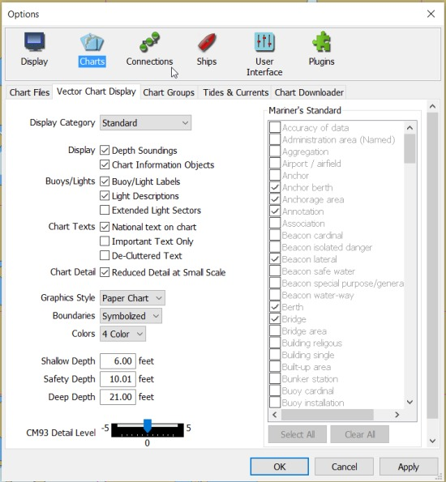
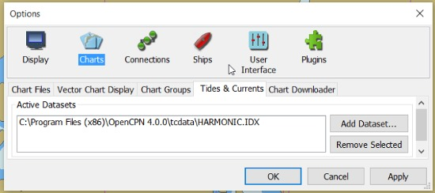

The Chart
Chart Files

Add Directory
In OpenCPN charts are added by adding the directory (folder) that contains the chart files. This tab is where charts are added and removed. Read about the details in Installing Charts
Remove Selected
Mark the chart directories that are no longer needed, press the button an then “Apply” or “OK”.
Scan Charts and Update Database
Use this option if you have made any changes to the contents of your chart directories, as for example after downloading new charts from NOAA, etc. It need not be checked if directories are added or subtracted, as the entire database will be scanned and updated automatically in this case.
Force Full Database Rebuild
Is mainly aimed at users converting or correcting existing charts, in a situation where changes are made to the geo-referencing, outline of the chart, or other attributes in the kap file header section.
Prepare all ENC charts
Converts all existing S57/S63 charts to an internal SENC format for fast loading. The button is there on popular request, and means that O don't stop to process a chart when encountered the first time, but instead process all charts at once. The process can take quite some time, depending on your system. If you already done the new conversion once and add a chart, pressing the button will be fast as only the new chart is processed. NOTE: There is also a new naming system for the processed files. It's a good idea to delete the SENC folder the first time you use the new beta, and then press “Prepare all ENC charts”. The only reason for this is to save some space on your hard desk.
Vector Charts Display

Read more about Vector Charts .
Chart Groups

Read more about Chart Groups .
Tides & Currents

Read more about Tides and Currents .